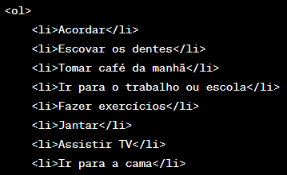

Basico sobre HTML e CSS
Breve resumo sobre HTML
HTML, ou HyperText Markup Language, é a linguagem que deu origem à web. Criado por Tim Berners-Lee em 1991, ele permitiu a criação de documentos interativos e o compartilhamento de informações online. Ao longo dos anos, o HTML evoluiu para incluir recursos avançados, como imagens e vídeo. Hoje, ele é a base da internet, facilitando a criação de páginas da web em todo o mundo.
Breve resumo sobre CSS
CSS, ou Cascading Style Sheets, é uma linguagem usada para controlar a apresentação e o design de páginas da web. Ela foi desenvolvida para separar o conteúdo (HTML) da aparência visual, permitindo que os desenvolvedores apliquem estilos, como cores, fontes e layout, de forma consistente em várias páginas. CSS desempenha um papel fundamental na criação de websites atraentes e bem organizados.
HTML
Estrutura basica
O HTML é criado com uma estrutura basica, como exemplo:
Com essa forma basica de estrutura é possivel criar uma pagina WEB completa.
Como é possivel ver na imagem, existe o tipo de documento, sendo ele <!DOCTYPE html>.
Além do tipo, existe as "TAGs", do qual são <html> e </html>, do qual é uzada para limitar o começo e fim do arquivo, sendo importante salientar que a barra (/) em uma TAG é usada para fechar ela, limitando onde aquela "area" termina.
A TAG <head> define a area que seria a "cabeça" do site, porém não é possivel vela na pagina WEB, essa area é dedicada a possuir informações importantes sobre a pagina.
A TAG <meta charset="UTF-8"> é usada para definir o conjunto de caracteres (character set) que o navegador deve usar para interpretar o texto da página
A TAG <title> é usada para definir o titulo da pagina na aba do navegador, para identificação.
E por ultimo e com certeza não menos importante a TAG <body> do qual é onde sera criada a pagina em si, aqui é onde fica todas as coisas visiveis ao usuario.
Tags importantes
Como mostrado durante o texto anterior é muito importante as TAGs no HTML, sendo praticamente a base do arquivo final.
É importante resaltar que a maior parte das TAGs necessitam ser abertas e fechada para que o conteudo entre as tags funcionem adequadamente.
As principais TAGs são:
- <h1> até <h6> Usado para cria cabeçalhos com diferentes graus de importancia, pode ser usado varias vezes em "qual quer local do codigo".
- <p> Usado para cria um paragrafo, usado muitas vezes para escrever algo para o usuario ler.
- <ul> Usado para criar uma lista desordenada, no caso seria uma lista do qual não possui um indicador numerico por exemplo para demostrar qual a ordem da lista.
- <ol> Usado para criar uma lista ordenada, com um numero antes dos itens da lista. 
- <li> Usado para listar os itens de uma lista.
- <a> Usada para criar hiperlinks, também conhecidos como âncoras, que permitem que os usuários naveguem entre diferentes páginas da web ou dentro da mesma página.
- <img> Usada para colocar imagem na pagina.
- <div> Usada para criar um container genérico que agrupa e organiza elementos HTML para aplicar estilos e estruturar o layout de uma página da web.
- <!-- "comentario" --> Usada para deixar comentario no codigo HTML.


CSS
Integração do CSS ao HTML
Para integrar o CSS ao HTML é possivel usar algumas formas diferentes, porém existe uma forma do qual é mais utilizada, sendo ela a vinculação do arquivo CSS ao head da pagina HTML.
Utilização do CSS
Para utilizar o CSS com base na forma apresentada anteriormente, existe tambem algumas formas, porém uma da mais usada é a classe, sendo colocado uma clase a uma TAG no HTML para referenciar no arquivo CSS e assim alterar as propriedades da TAG.
Nesse caso foi usado uma classe dentro de um paragrafo
Ja Nesse caso foi criado uma classe no CSS para atribuir visual ao paragrafo do HTML
Importante salientar que para que se crie uma classe no CSS é preciso usar . (ponto) antes da palavra que sera usada para definir uma classe, pois assim o CSS reconhecera como uma classe.
Configurações comuns no CSS
Existem algumas configurações comuns ao utilizar o CSS.
No caso da imagem, o "color" define a cor das letras, "backgroud-color" é usado para definir a cor de fundo da TAG, "padding" é usado para definir o espaço interno de um elemento e sua borda.
Apesar de ter mais configurações é sempre bom verificar a existencia de algo que você precise pois na realidade é muito melhor você testar varias opções e ver qual lhe agrada mais.
Em resumo, o CSS é uma linguagem essencial para a criação de páginas da web visualmente atraentes e bem organizadas. Com ele, você pode controlar todos os aspectos visuais de seu site, desde cores e fontes até o posicionamento de elementos na página. O entendimento e o domínio do CSS são fundamentais para o desenvolvimento web moderno e para criar experiências de usuário envolventes na internet.